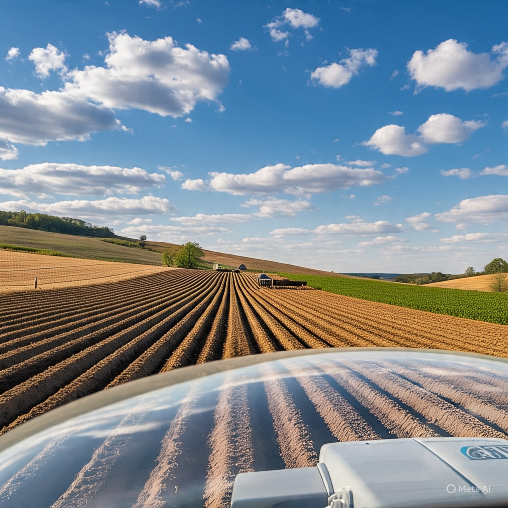
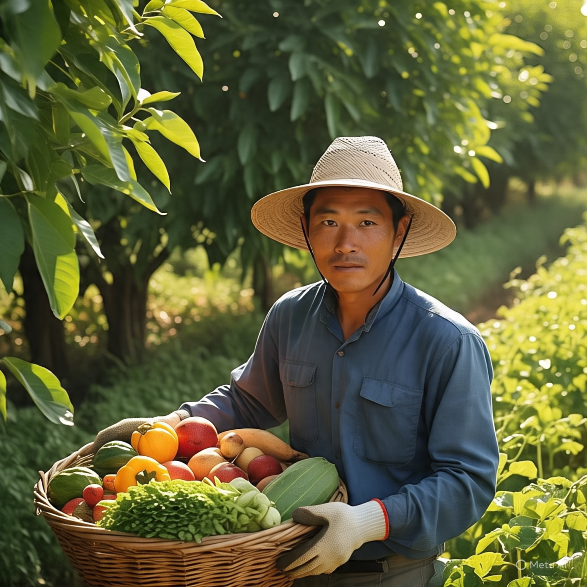
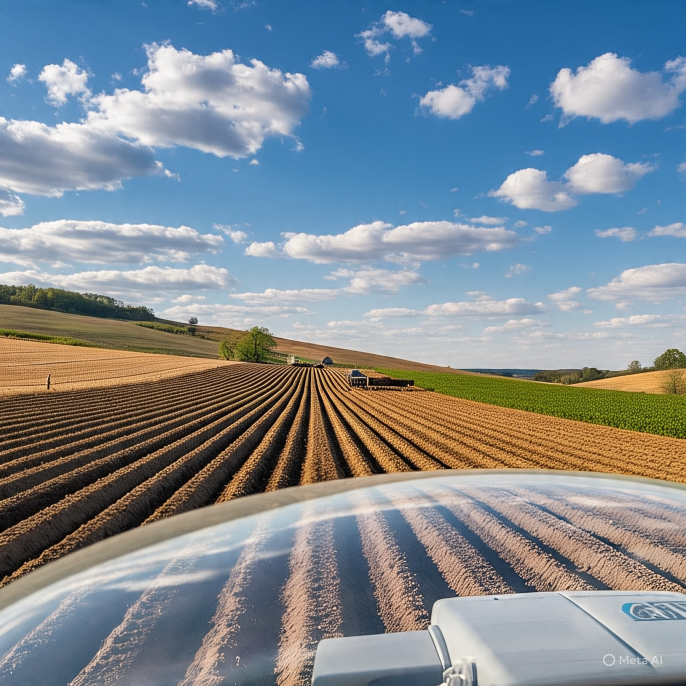
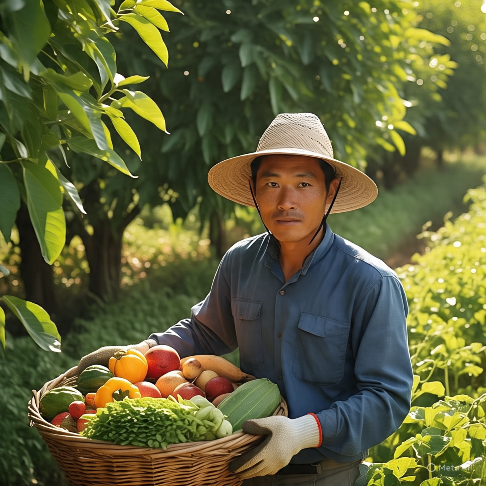
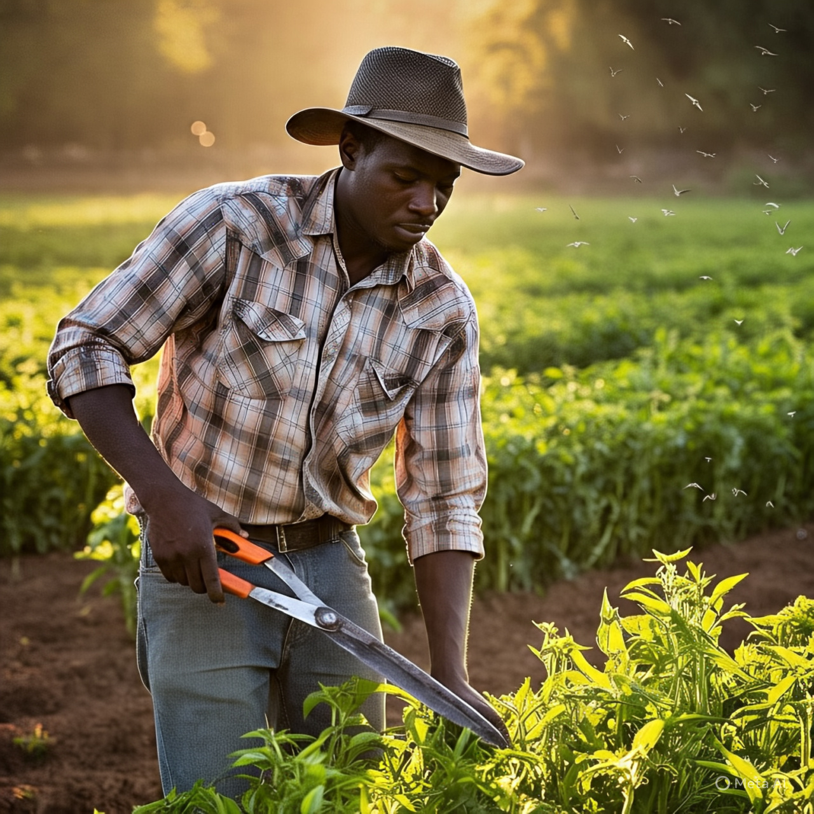
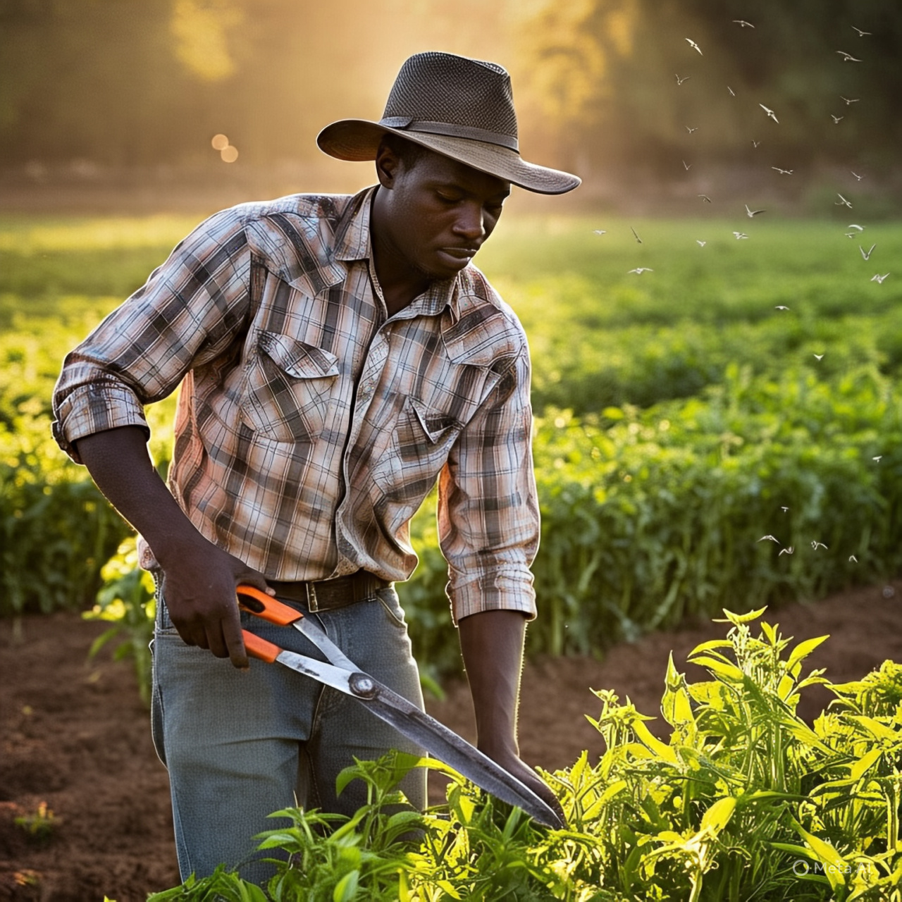

Motivos para festejar no Campo
O que é Agricultura Familiar?
A agricultura familiar é um modelo de produção agrÃcola em que a gestão e a maior parte do trabalho são realizados por uma mesma famÃlia, em propriedades de até quatro módulos fiscais.
A agricultura familiar desempenha um papel fundamental na produção de alimentos e na sustentabilidade econômica e ambiental. Ela se caracteriza por propriedades rurais administradas por famÃlias, que utilizam mão de obra própria e técnicas tradicionais, muitas vezes aliadas a práticas agroecológicas.
Esse modelo contribui para a segurança alimentar, a preservação da biodiversidade e o desenvolvimento das comunidades locais. Além disso, a agricultura familiar fortalece a cultura regional, promovendo produtos artesanais e incentivando o consumo de alimentos mais saudáveis.
Apesar de sua importância, enfrenta desafios como o acesso limitado a crédito e tecnologia, tornando essencial o apoio governamental e polÃticas públicas que valorizem essa atividade.
Imagens da Agricultura Familiar, festejamos essa união
 



 

🌾🚀 Projeto: AgroTech Jovem
Inovando no Campo com Inteligência
AgroTech Jovem é um projeto que une juventude, tecnologia e agricultura familiar para transformar a vida no campo com ideias simples, criativas e sustentáveis. A proposta é criar uma horta inteligente com sensores de umidade e clima, controlada por um aplicativo feito por estudantes. A tecnologia avisa quando regar, ajuda a economizar água e até recomenda as melhores plantas para o solo. Além disso, o projeto ensina famÃlias a construir seus próprios sistemas com materiais recicláveis e acessÃveis, gerando autonomia e renda. O objetivo é mostrar que o futuro da agricultura pode estar nas mãos dos jovens, com inovação, respeito à natureza e amor pelo campo.
"Se a gente pode programar um futuro melhor, por que não começar agora?" 🌱💡
* Une tecnologia real (sensores, app, automação).
* Tem impacto direto na produção e economia da famÃlia.
* É acessÃvel, pode ser feito com poucos recursos.
* Mostra que o aluno é protagonista da mudança.
* 📷 Sugestão de visual para o site:
* Colocar imagens ou Ãcones de hortas, placas solares, sensores, aplicativo no celular.